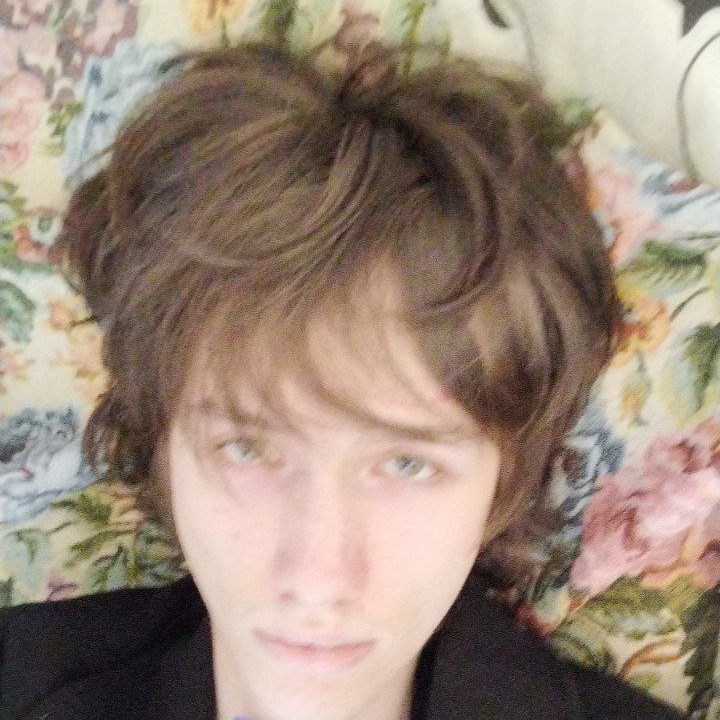
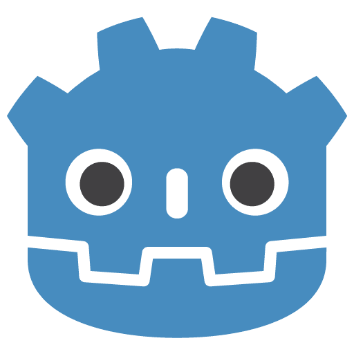
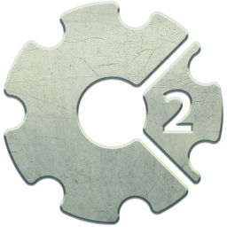
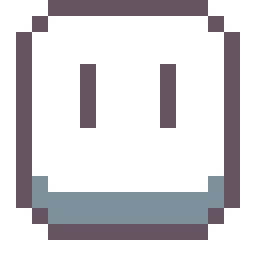

Кто я
Привет! Меня зовут Георгий Огорелков, и я — разработчик компьютерных игр. Учусь на 5 курсе СПбГУПТД по направлению «Прикладная информатика». Создаю игры от идеи и геймдизайна до программирования, графики и звука. Мне нравится делать атмосферные инди-проекты с проработанными механиками и запоминающимся визуальным стилем.
Навыки

Godot / GDScript
Construct 2 / Classic
AsepriteЧем занимаюсь
Проектирую и реализую игровые механики, создаю пиксель-арт графику и анимации, проектирую уровни. Особый интерес — атмосферные 2D-игры, процедурная генерация контента и нарративный дизайн.
Образование
СПбГУПТД, Институт информационных технологий и автоматизации
Направление: 09.03.03 Прикладная информатика
Кафедра цифровых и аддитивных технологий
Интересы
Помимо разработки игр увлекаюсь написанием музыки.
В свободное время экспериментирую с новыми механиками.